Magie vzduchu
Èarodìjovo oko
Mana: 1, Cena: 100
Èarodìjovo oko zpùsobí, ¾e automapa v horním pravém rohu obrazovky ukazuje pozice nestvùr a ostatních zajímavých míst. Kouzlo trvá 1 hodinu za ka¾dý bod Magie Vzduchu.
| 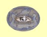 | Normální | Zobrazuje jen terén a nestvùry |
| Expert | Zobrazuje poklady | |
| Mistr | Zobrazuje dal¹í zajímavá a dùle¾itá místa |
Statický výboj
Mana: 2, Cena: 200
Zasáhne jeden cíl výbojem statické elektøiny, který sice zpùsobí pouze 2-6 zranìní, ale zase v¾dy zasáhne.
| 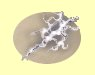 | Normální | Kouzlo stojí 2 body many |
| Expert | Kouzlo stojí 1 bod many. Rychlej¹í doba zotavení | |
| Mistr | Kouzlo stojí 0 bodù many, Nejrychlej¹í doba zotavení |
Odolnost vùèi elektøinì
Mana: 3, Cena: 300
Zvy¹uje odolnost v¹ech tvých postav proti elektøinì o mno¾ství úmìrné tvým bodùm dovednosti Magie Vzduchu. Efekt trvá hodinu za ka¾dý bod dovednosti.
| 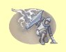 | Normální | 1 bod odolnosti za bod dovednosti |
| Expert | 2 body odolnosti za bod dovednosti | |
| Mistr | 3 bod odolnosti za bod dovednosti |
Jiskry
Mana: 4, Cena: 400
Jiskry vystøelí malé kulièky bleskù, které se odrá¾ejí, dokud se do nìèeho netrefí nebo se nerozplynou. Tì¾ko pøedem øíct, co zasáhnou, tak¾e nejlépe je toto pou¾ívat v místnosti zaplnìné lehkými nestvùrami. Ka¾dá jiskra zpùsobí 2 body zranìní +1 bod za ka¾dý bod dovednosti Magie Vzduchu.
| 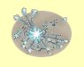 | Normální | Støednì rychlé zotavení, 3 jiskry |
| Expert | Rychlé zotavení, 5 jisker | |
| Mistr | Rychlej¹í zotavení, 7 jisker |
Peøíèko
Mana: 5, Cena: 500
Kouzo Peøíèko chrání tvé postavy pøed zranìním, kdy¾ spadnou z vý¹ky vìt¹í ne¾ deset stop tím, ¾e zpomalí jejich pád. Kouzlo pùsobí na celou skupinu a doba trvání závisí na dovednosti Magie Vzduchu.
| 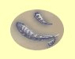 | Normální | Doba trvání 5 minut za bod dovednosti |
| Expert | Doba trvání 10 minut za bod dovednosti | |
| Mistr | Doba trvání 1 hodina za bod dovednosti |
©tít
Mana: 8, Cena: 750
Sni¾uje zranìní z útokù z dálky (napøíklad kameny nebo ¹ípy) na polovinu tím, ¾e zpomalí støelu pøed tím, ne¾ zasáhne.
| 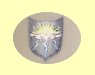 | Normální | Doba trvání 1 hodina +5 minut za bod dovednosti |
| Expert | Kouzlo pùsobí na celou skupinu | |
| Mistr | Doba trvání 1 hodina +15 minut za bod dovednosti |
Blesk
Mana: 10, Cena: 1000
Oblíbené kouzlo èarodìjù, z dlaní mága vystøelí Blesk na jeden cíl, který v¾dy zasáhne a zpùsobí mu 1-8 bodù zranìní za bod dovednosti v Magii Vzduchu.
| 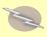 | Normální | Støední doba zotavení |
| Expert | Rychlej¹í zotavení | |
| Mistr | Nejrychlej¹í zotavení |
Skok
Mana: 15, Cena: 1500
Po zakouzlení tvá skupina vyskoèí 60 stop vysoko do vzduchu a mù¾e tak dosáhnout vysokých ramp èi teras. Skupinu nezraní pád na zem ze skoku.
| 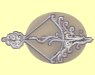 | Normální | Støední doba zotavení |
| Expert | Rychlej¹í zotavení | |
| Mistr | Nejrychlej¹í zotavení |
Imploze
Mana: 20, Cena: 2000
Imploze je opravdu nepøíjemné kouzlo, které pùsobí na cíl tak, ¾e kolem nìj zvý¹í abnormálnì tlak tak, ¾e vzduch zpùsobí 10 bodù zranìní plus 1-10 bodù za ka¾dý bod dovednosti Magie Vzduchu.
| 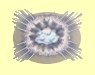 | Normální | Støední doba zotavení |
| Expert | Rychlé zotavení | |
| Mistr | Rychlej¹í doba zotavení |
Létání
Mana: 25, Cena: 3000
Pøidá tvé skupinì mo¾nost létání. Toto kouzlo je velmi drahé a funguje pouze venku, ale je velmi u¾iteèné. Létání bere jeden bod many ka¾dých 5 minut letu.
| 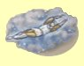 | Normální | Doba trvání 5 minut za bod dovednosti |
| Expert | Doba trvání 10 minut za bod dovednosti | |
| Mistr | Doba trvání 1 hodina za bod dovednosti |
Hvìzdná spou¹»
Mana: 30, Cena: 5000
Pøivolá z nebes hvìzdy, které zpopelní tvé nepøátele. Ka¾dá hvìzda zpùsobí 20 bodù zranìní +1 bod za ka¾dý bod Magie Vzduchu, tak¾e zkus nebýt blízko oblasti dopadu ... Toto kouzlo funguje jen venku.
| 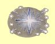 | Normální | Pomalá doba zotavení a 8 hvìzd |
| Expert | Rychlej¹í doba zotavení a 12 hvìzd | |
| Mistr | Nejrychlej¹í doba zotavení a 16 hvìzd |